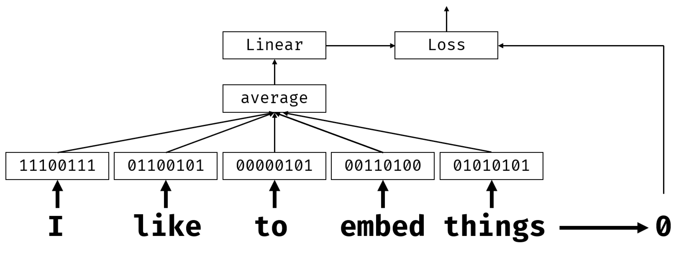
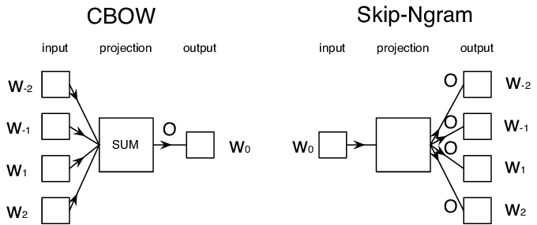

嵌入
课前测验
在基于BoW或TF/IDF训练分类器时，我们处理的是长度为vocab_size的高维词袋向量，并且我们明确地从低维位置表示向量转换为稀疏的独热表示。然而，这种独热表示并不高效。此外，每个词之间都是独立处理的，即独热编码向量不体现任何词语之间的语义相似性。
嵌入的想法是通过低维稠密向量来表示词语，从某种程度上反映词语的语义含义。稍后我们将讨论如何构建有意义的词嵌入，但现在我们将嵌入视为降低词向量维度的一种方法。
因此，嵌入层会接受一个词作为输入，并生成一个指定embedding_size的输出向量。在某种意义上，它与Linear层非常相似，但它不是接受独热编码向量，而是可以接受词语编号作为输入，从而避免创建庞大的独热编码向量。
通过将嵌入层作为分类器网络的第一层，我们可以从词袋模型切换到嵌入袋模型，在其中我们首先将文本中的每个词转换为相应的嵌入，然后对所有这些嵌入计算一些聚合函数，例如sum、average或max。

图片作者
✍️ 练习：嵌入
在以下笔记本中继续学习： * 使用PyTorch嵌入 * 使用TensorFlow嵌入
语义嵌入：Word2Vec
虽然嵌入层学习将词语映射到向量表示，但这种表示不一定具有很强的语义意义。学习一个向量表示，使得相似词或同义词对应于在某种向量距离（如欧几里得距离）上彼此接近的向量是有益的。
为此，我们需要以特定方式在大规模文本集合上预训练嵌入模型。这种进行语义嵌入训练的方法之一称为Word2Vec。它基于两种主要架构来生成词语的分布式表示：
- 连续词袋（CBoW）——在这种架构中，我们训练模型从周围的上下文中预测一个词。给定ngram $(W_{-2},W_{-1},W_0,W_1,W_2)$，模型的目标是从$(W_{-2},W_{-1},W_1,W_2)$预测$W_0$。
- 连续跳字模型与CBoW相反，模型使用上下文词的窗口来预测当前词。
CBoW更快，而跳字模型较慢，但在表示不常见词语时效果更好。

图片来源于这篇论文
预训练的Word2Vec嵌入（以及其他类似模型，如GloVe）也可以在神经网络中替代嵌入层使用。然而，我们需要处理词汇表问题，因为用于预训练Word2Vec/GloVe的词汇表可能与我们的文本语料库中的词汇表不同。请查看上述笔记本了解如何解决此问题。
上下文嵌入
传统的预训练嵌入表示（如Word2Vec）的一个关键限制是词义消歧问题。虽然预训练的嵌入可以在某种程度上捕捉词语在上下文中的意义，但词语的每种可能意义都被编码在同一个嵌入中。这可能会在下游模型中引起问题，因为许多词语（如单词“play”）根据使用的上下文具有不同的意义。
例如，词“play”在这两个不同句子中的意义截然不同：
- 我去剧院看了一场戏剧。
- 约翰想和朋友们玩耍。
上述预训练嵌入将词“play”的这两种意义表示为相同的嵌入。为了克服这一限制，我们需要基于语言模型构建嵌入，该模型在大规模文本语料库上进行训练，并且知道如何在不同上下文中组合词语。本教程不讨论上下文嵌入，但我们会在课程后续讨论语言模型时重温这一主题。
总结
在本课中，你了解了如何在TensorFlow和Pytorch中构建和使用嵌入层以更好地反映词语的语义意义。
🚀 挑战
Word2Vec已被用于一些有趣的应用，包括生成歌词和诗歌。请查阅这篇文章，了解作者如何使用Word2Vec生成诗歌。还可以观看Dan Shiffmann的视频，了解这种技术的不同解释。然后尝试将这些技术应用到你自己的文本语料库中，可能来自Kaggle。
课后测验
复习与自学
阅读这篇关于Word2Vec的论文：在向量空间中高效估计词语表示